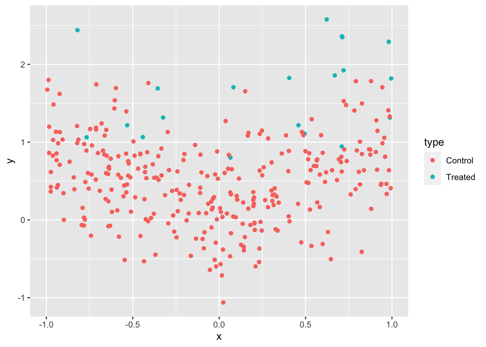
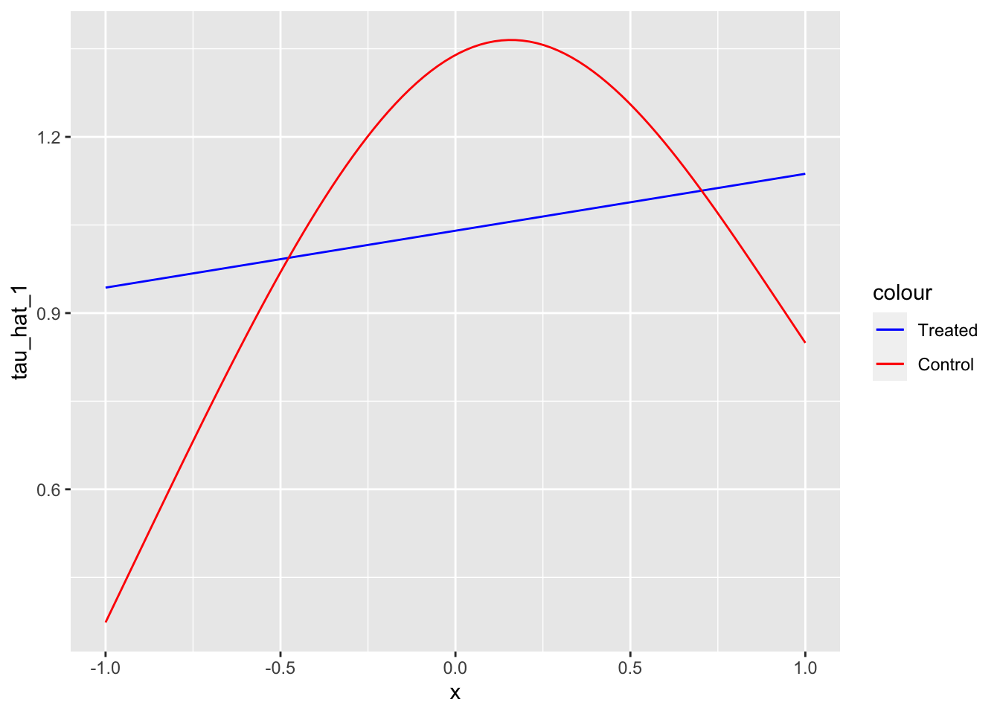

In this section, we look at the S-, X-, T-, and R-learner, which are method that estimate heterogeneous treatment effects when the treatment is binary. While X-learner and T-learner cannot be extended to continuous treatment cases, S-learner and R-learner can be. Mathematical notations used in this chapter closely follow those of (Künzel et al. 2019) and (Nie and Wager 2021).
What you will learn
Key points
R-learner is the same as DML approaches by Chernozhukov et al. (2018) except that CATE is estiamted at the second instead of ATE.
In most practical cases, R-learner performs better than S-, X-, and T-learners.
S- and T-learners are especially undesirable due to its tendency to underestimate CATE
12.1 Motivation
In Chapter 11, the basic idea of double machine learning (DML) methods was introduced when the treatment effect is homogeneous. We now turn our focus to the task of estimating heterogeneous treatment effects: the impact of a treatment varies based on observed attributes of the subjects. Heterogeneous treatment effect is also referred to as conditional average treatment effect (CATE).
Conditional on observed attributes.
Understanding how treatment effects vary can be highly valuable in many circumstances.
Example 1: If we come to know a particular drug is effective on elderly people but detrimental to kids, then doctors can make a smart decision of prescribing the drug to elderly people, but not to kids.
In this example, the heterogeneity driver is age.
Example 2: If we come to know that fertilizer is more effective in increasing corn yield in soil type A than B, then farmers can apply more fertilizer on the parts of the field where soil type is A but less on where soil type is B.
In this example, the heterogeneity driver is soil type.
As you can see in these examples, knowledge on the heterogeneity of the treatment effect and its drivers can help decision makers smart-target treatments and policies.
12.2 Modeling Framework
The model of interest in general form is as follows:
\(X\): collection of variables that affect Y indirectly through the treatment (\(\theta(X)\cdot T\)) and directly (\(g(X, W)\)) independent of the treatment
\(W\): collection of variables that affect directly (\(g(X, W)\)) independent of the treatment, but not through the treatment
Here are the assumptions:
\(E[\varepsilon|X, W] = 0\)
\(E[\eta|X, W] = 0\)
\(E[\eta\cdot\varepsilon|X, W] = 0\)
For the notational convenicence, let \(\mu_1(X)\) and \(\mu_0(X)\) denote the expected value of the potential conditional outcomes:
S-learner estimates CATE by taking the following steps:
Regress \(Y\) on \(W\) and \(X\) to estimate \(E[Y|W,X]\) using any appropriate ML regression methods and call it \(\hat{\mu}(W,X)\).
Estimate \(\hat{\theta}(X)\) as \(\hat{\mu}(W=1,X)-\hat{\mu}(W=0,X)\)
In this approach, no special treatment is given to \(W\). It is just a covariate along with others (\(X\)). This approach is named S-learner by Künzel et al. (2019) because it involves estimating a single response function.
12.3.2 T-learner
Regress \(Y\) on \(W\) and \(X\) using the treated observations to estimate \(\mu_1(X)\) using any appropriate ML regression methods.
Regress \(Y\) on \(W\) and \(X\) using the control observations to estimate \(\mu_0(X)\) using any appropriate ML regression methods.
Estimate \(\hat{\theta}(X)\) as \(\hat{\mu}_1(X)-\hat{\mu}(X)\)
This approach is named T-learner by Künzel et al. (2019) because it involves estimating two functions.
12.3.3 X-learner
Estimate \(\mu_1(X)\) and \(\mu_0(X)\) using any appropriate ML regression methods. (Steps 1 and 2 of the T-learner)
Impute individual treatment effect for the treated and control groups as follows
Any value of \(g(X)\) is acceptable. One option of \(g(X)\) may be the estimated propensity score \(E[W|X]\).
12.4 T-learner v.s. X-learner
Here, an advantage of X-learner over T-learner is demonstrated (This example also serves as an illustration of how these learners are implemented). Specifically, X-learner can be particularly useful when the control-treatment assignments in the sample are unbalanced. For example, it is often the case that there are plenty of observations in the control group, while there are not many treated observations. For the purpose of illustration, consider a rather extreme case where there are only 10 observations in the treated group, while there are 300 observations in the control group. We use the following toy data generating process:
\[
\begin{align}
y = \tau W + |x| + v
\end{align}
\]
where \(\tau = 1\). So, the treatment effect is not heterogeneous. For the purpose of illustrating the advantage of X-learner over T-learner, it is convenient if the underlying model is simpler.
ggplot(data = data) +geom_point(aes(y = y, x = x, color = type))

Let’s first estimate \(\mu_1(X)\) and \(\mu_0(X)\) (Step 1). Since we have only \(20\) observations in the treated group, we will use a linear regression to avoid over-fitting (following the example in Künzel et al. (2019)).
mu_1_trained <-lm(y ~ x, data = data[type =="Treated", ])mu_0_trained <-gam(y ~s(x, k =4), data = data[type =="Control", ])
Now that \(\mu_1(X)\) and \(\mu_0(X)\) are estimated, we can estimate \(\hat{\theta}(X)\) by T-learner.
As you can see, T-learner is heavily biased. This is because of the unreliable estimation of \(\mu_1(X)\) due to lack of observations in the treated group.
ggplot(data = tau_hat_data) +geom_line(aes(y = tau_hat_T, x = x))
Now, let’s move on to X-learner. We impute individual treatment effects (Step 2).
#=== mu (treated) ===#mu_hat_1 <-predict(mu_0_trained, newdata = data[type =="Treated", ])#=== mu (control) ===#mu_hat_0 <-predict(mu_1_trained, newdata = data[type =="Control", ])#=== assign the values ===#data[type =="Treated", mu_hat := mu_hat_1]data[type =="Control", mu_hat := mu_hat_0]#=== find individual TE ===#data[, D :=ifelse(type =="Treated", y - mu_hat, mu_hat - y)]
We can now regress \(D\) on \(X\) (Step 3),
#--------------------------# tau (treated)#--------------------------tau_1_trained <-lm(D ~ x, data = data[type =="Treated", ])#=== estimate tau_1 ===#tau_hat_data[, tau_hat_1 :=predict(tau_1_trained, newdata = tau_hat_data)]#--------------------------# tau (control)#--------------------------tau_0_trained <-gam(D ~s(x, k =4), data = data[type =="Control", ])#=== estimate tau_1 ===#tau_hat_data[, tau_hat_0 :=predict(tau_0_trained, newdata = tau_hat_data)]
ggplot(data = tau_hat_data) +geom_line(aes(y = tau_hat_1, x = x, color ="Treated")) +geom_line(aes(y = tau_hat_0, x = x, color ="Control")) +scale_color_manual(values =c("Treated"="blue", "Control"="red"))

Let’s use propensity score as \(g(X)\) in Step 4.
w_gam_trained <-gam( W ~s(x, k =4), data = data, family =binomial(link ="probit") )
Let’s predict \(E[W|X]\) at each value of \(X\) at which we are estiamting \(\tau\).
tau_hat_data[, g_x :=predict(w_gam_trained, newdata = tau_hat_data, type ="response")]
As you can see below, the mean value of \(g(x)\) is small because the treatment probability is very low (it is only \(20\) out of \(320\)).
mean(tau_hat_data[, g_x])
[1] 0.06451538
This number is basically \(20/320\). So, in this example, we could have just used the proportion of the treated observations. Notice that \(g(X)\) is multiplied to \(\hat{\theta}_0(X)\) in Equation 12.2. So, we are giving a lower weight to \(\hat{\theta}_0(X)\). This is because \(\hat{\theta}_0(X)\) is less reliable because \(\hat{\mu}_1(X)\) is less reliable due to the lack of samples in the treated group.
As you can see, X-learner outperforms T-learner in this particualr instance at least in terms of point estimates of \(\tau(X)\).
ggplot(data = tau_hat_data) +geom_line(aes(y = tau_hat_T, x = x, color ="T-learner")) +geom_line(aes(y = tau_hat_X, x = x, color ="X-learner")) +geom_hline(yintercept =1, aes(color ="True Treatment Effect")) +scale_color_manual(values =c("T-learner"="red", "X-learner"="blue", "True Treatment Effect"="black" ),name ="" ) +ylab("Treatment Effect") +theme_bw() +theme(legend.position ="bottom")
Chernozhukov, Victor, Denis Chetverikov, Mert Demirer, Esther Duflo, Christian Hansen, Whitney Newey, and James Robins. 2018. “Double/debiased machine learning for treatment and structural parameters.”The Econometrics Journal 21 (1): C1–68. https://doi.org/10.1111/ectj.12097.
Künzel, Sören R., Jasjeet S. Sekhon, Peter J. Bickel, and Bin Yu. 2019. “Metalearners for Estimating Heterogeneous Treatment Effects Using Machine Learning.”Proceedings of the National Academy of Sciences 116 (10): 4156–65. https://doi.org/10.1073/pnas.1804597116.
Nie, X, and S Wager. 2021. “Quasi-Oracle Estimation of Heterogeneous Treatment Effects.”Biometrika 108 (2): 299–319. https://doi.org/10.1093/biomet/asaa076.
Source Code
# S-, X-, T-, and R-learner {#sec-het-dml}In this section, we look at the S-, X-, T-, and R-learner, which are method that estimate heterogeneous treatment effects when the treatment is binary. While X-learner and T-learner cannot be extended to continuous treatment cases, S-learner and R-learner can be. Mathematical notations used in this chapter closely follow those of [@kunzel_metalearners_2019] and [@nie_quasi-oracle_2021].:::{.callout-important}## What you will learn::::::{.callout-tip}## Key points+ R-learner is the same as DML approaches by @Chernozhukov2018 except that CATE is estiamted at the second instead of ATE.+ In most practical cases, R-learner performs better than S-, X-, and T-learners. + S- and T-learners are especially undesirable due to its tendency to underestimate CATE:::## MotivationIn @sec-dml, the basic idea of double machine learning (DML) methods was introduced when the treatment effect is homogeneous. We now turn our focus to the task of estimating heterogeneous treatment effects: the impact of a treatment varies based on observed attributes of the subjects. Heterogeneous treatment effect is also referred to as <spanstyle="color:blue"> conditional </span> average treatment effect (CATE).::: {.column-margin}<spanstyle="color:blue"> Conditional </span> on observed attributes.:::Understanding how treatment effects vary can be highly valuable in many circumstances. <spanstyle="color:blue"> Example 1: </span>If we come to know a particular drug is effective on elderly people but detrimental to kids, then doctors can make a smart decision of prescribing the drug to elderly people, but not to kids. ::: {.column-margin}In this example, the heterogeneity driver is age.:::<spanstyle="color:blue"> Example 2: </span>If we come to know that fertilizer is more effective in increasing corn yield in soil type A than B, then farmers can apply more fertilizer on the parts of the field where soil type is A but less on where soil type is B. ::: {.column-margin}In this example, the heterogeneity driver is soil type.:::As you can see in these examples, knowledge on the heterogeneity of the treatment effect and its drivers can help decision makers smart-target treatments and policies. ## Modeling FrameworkThe model of interest in general form is as follows:$$\begin{aligned}Y_i & = \theta(X_i)\cdot T_i + g(X_i, W_i) + \varepsilon_i \\T_i & = f(X_i, W_i) + \eta_i \end{aligned}$$ {#eq-model-framework}+ $Y$: dependent variable+ $T$: treatment variable+ $X$: collection of variables that affect Y indirectly through the treatment ($\theta(X)\cdot T$) and directly ($g(X, W)$) independent of the treatment+ $W$: collection of variables that affect directly ($g(X, W)$) independent of the treatment, but not through the treatmentHere are the assumptions:+ $E[\varepsilon|X, W] = 0$+ $E[\eta|X, W] = 0$+ $E[\eta\cdot\varepsilon|X, W] = 0$For the notational convenicence, let $\mu_1(X)$ and $\mu_0(X)$ denote the expected value of the potential conditional outcomes:$$\begin{align}\mu_1(X) & = E[Y|W=1, X] = g(X, W)\\\mu_0(X) & = E[Y|W=0, X] = \theta(X) + g(X, W)\end{align}$$## S-, T-, and X-Learner### S-learnerS-learner estimates CATE by taking the following steps:1. Regress $Y$ on $W$ and $X$ to estimate $E[Y|W,X]$ using any appropriate ML regression methods and call it $\hat{\mu}(W,X)$.2. Estimate $\hat{\theta}(X)$ as $\hat{\mu}(W=1,X)-\hat{\mu}(W=0,X)$In this approach, no special treatment is given to $W$. It is just a covariate along with others ($X$). This approach is named S-learner by @kunzel_metalearners_2019 because it involves estimating a <spanstyle='color:red'>s</span>ingle response function.### T-learner1. Regress $Y$ on $W$ and $X$ using the treated observations to estimate $\mu_1(X)$ using any appropriate ML regression methods.2. Regress $Y$ on $W$ and $X$ using the control observations to estimate $\mu_0(X)$ using any appropriate ML regression methods.3. Estimate $\hat{\theta}(X)$ as $\hat{\mu}_1(X)-\hat{\mu}(X)$This approach is named T-learner by @kunzel_metalearners_2019 because it involves estimating <spanstyle='color:red'>t</span>wo functions.### X-learner1. Estimate $\mu_1(X)$ and $\mu_0(X)$ using any appropriate ML regression methods. (Steps 1 and 2 of the T-learner)2. Impute individual treatment effect for the treated and control groups as follows$$\begin{align}\tilde{D}_i^1(X_i) = Y^1_i - \hat{\mu}_0(X_i)\\\tilde{D}_i^0(X_i) = \hat{\mu}_1(X_i) - Y^0_i \end{align}$$ ::: {.column-margin}This is similar to cross-fitting we saw in @sec-dml, where the folds are the treated and control groups.:::3. + Regress $\tilde{D}_i^1(X_i)$ on $X$ using the observations in the treated group and denote the predicted value as $\hat{\theta}_1(X)$+ Regress $\tilde{D}_i^0(X_i)$ on $X$ using the observations in the control group and denote the predicted value as $\hat{\theta}_0(X)$4. Calculate $\hat{\theta}(X)$ as their weighted average$$\begin{align}\hat{\theta}(X) = g(X)\cdot\hat{\theta}_0(X) + [1-g(X)]\cdot\hat{\theta}_1(X)\end{align}$$ {#eq-final-X}Any value of $g(X)$ is acceptable. One option of $g(X)$ may be the estimated propensity score $E[W|X]$.## T-learner v.s. X-learnerHere, an advantage of X-learner over T-learner is demonstrated (This example also serves as an illustration of how these learners are implemented). Specifically, X-learner can be particularly useful when the control-treatment assignments in the sample are unbalanced. For example, it is often the case that there are plenty of observations in the control group, while there are not many treated observations. For the purpose of illustration, consider a rather extreme case where there are only 10 observations in the treated group, while there are 300 observations in the control group. We use the following toy data generating process:::: {.column-margin}**Packages to load for replication**```{r}#| include: falselibrary(data.table)library(tidyverse)library(ranger)library(rlearner)library(mgcv)``````{r}#| eval: falselibrary(data.table)library(tidyverse)library(ranger)library(rlearner)library(mgcv)```:::$$\begin{align}y = \tau W + |x| + v\end{align}$$ where $\tau = 1$. So, the treatment effect is not heterogeneous. For the purpose of illustrating the advantage of X-learner over T-learner, it is convenient if the underlying model is simpler.```{r}set.seed(4345)N_trt <-20N_ctrl <-300N <- N_trt + N_ctrldata <-data.table(W =c(rep(1,N_trt), rep(0, N_ctrl)),type =c(rep("Treated", N_trt), rep("Control", N_ctrl)),x =2*runif(N)-1,v =rnorm(N) /2 ) %>% .[, y := W +abs(x) + v]``````{r}ggplot(data = data) +geom_point(aes(y = y, x = x, color = type))```Let's first estimate $\mu_1(X)$ and $\mu_0(X)$ (Step 1). Since we have only $`r N_trt`$ observations in the treated group, we will use a linear regression to avoid over-fitting (following the example in @kunzel_metalearners_2019).```{r}mu_1_trained <-lm(y ~ x, data = data[type =="Treated", ])mu_0_trained <-gam(y ~s(x, k =4), data = data[type =="Control", ])```Now that $\mu_1(X)$ and $\mu_0(X)$ are estimated, we can estimate $\hat{\theta}(X)$ by T-learner.```{r}x_seq <-data.table(x =seq(-1, 1, length =100))#=== T-learner ===#tau_hat_data <- x_seq %>% .[, mu_1_hat :=predict(mu_1_trained, newdata = x_seq)] %>% .[, mu_0_hat :=predict(mu_0_trained, newdata = x_seq)] %>% .[, tau_hat_T := mu_1_hat - mu_0_hat]```As you can see, T-learner is heavily biased. This is because of the unreliable estimation of $\mu_1(X)$ due to lack of observations in the treated group.```{r}ggplot(data = tau_hat_data) +geom_line(aes(y = tau_hat_T, x = x))```Now, let's move on to X-learner. We impute individual treatment effects (Step 2).```{r}#=== mu (treated) ===#mu_hat_1 <-predict(mu_0_trained, newdata = data[type =="Treated", ])#=== mu (control) ===#mu_hat_0 <-predict(mu_1_trained, newdata = data[type =="Control", ])#=== assign the values ===#data[type =="Treated", mu_hat := mu_hat_1]data[type =="Control", mu_hat := mu_hat_0]#=== find individual TE ===#data[, D :=ifelse(type =="Treated", y - mu_hat, mu_hat - y)]```We can now regress $D$ on $X$ (Step 3),```{r}#--------------------------# tau (treated)#--------------------------tau_1_trained <-lm(D ~ x, data = data[type =="Treated", ])#=== estimate tau_1 ===#tau_hat_data[, tau_hat_1 :=predict(tau_1_trained, newdata = tau_hat_data)]#--------------------------# tau (control)#--------------------------tau_0_trained <-gam(D ~s(x, k =4), data = data[type =="Control", ])#=== estimate tau_1 ===#tau_hat_data[, tau_hat_0 :=predict(tau_0_trained, newdata = tau_hat_data)]``````{r}ggplot(data = tau_hat_data) +geom_line(aes(y = tau_hat_1, x = x, color ="Treated")) +geom_line(aes(y = tau_hat_0, x = x, color ="Control")) +scale_color_manual(values =c("Treated"="blue", "Control"="red"))```Let's use propensity score as $g(X)$ in Step 4.```{r}w_gam_trained <-gam( W ~s(x, k =4), data = data, family =binomial(link ="probit") )```Let's predict $E[W|X]$ at each value of $X$ at which we are estiamting $\tau$. ```{r}tau_hat_data[, g_x :=predict(w_gam_trained, newdata = tau_hat_data, type ="response")]```As you can see below, the mean value of $g(x)$ is small because the treatment probability is very low (it is only $`r N_trt`$ out of $`r N`$).```{r}mean(tau_hat_data[, g_x])```This number is basically $`r N_trt`/320$. So, in this example, we could have just used the proportion of the treated observations. Notice that $g(X)$ is multiplied to $\hat{\theta}_0(X)$ in @eq-final-X. So, we are giving a lower weight to $\hat{\theta}_0(X)$. This is because $\hat{\theta}_0(X)$ is less reliable because $\hat{\mu}_1(X)$ is less reliable due to the lack of samples in the treated group. ```{r}tau_hat_data[, tau_hat_X := g_x * tau_hat_0 + (1-g_x) * tau_hat_1]```As you can see, X-learner outperforms T-learner in this particualr instance at least in terms of point estimates of $\tau(X)$. ```{r}ggplot(data = tau_hat_data) +geom_line(aes(y = tau_hat_T, x = x, color ="T-learner")) +geom_line(aes(y = tau_hat_X, x = x, color ="X-learner")) +geom_hline(yintercept =1, aes(color ="True Treatment Effect")) +scale_color_manual(values =c("T-learner"="red", "X-learner"="blue", "True Treatment Effect"="black" ),name ="" ) +ylab("Treatment Effect") +theme_bw() +theme(legend.position ="bottom")```<!-- Let $e(X)$ denote the propensity score $pr(W=1|X) = E[W|X]$. Under the unconfoundedness assumption,$E[\varepsilon(W_i)|X_i, W_i] = 0$, where $\varepsilon_i(w) = Y_i(w) - {\mu_0(X_i)} + w\tau(X_i)$ + $Y_i(0) = {\mu_0(X_i)} + 0\cdot \tau(X_i) = \mu_0(X_i) + \varepsilon_i$+ $Y_i(1) = {\mu_0(X_i)} + 1\cdot \tau(X_i) = \mu_0(X_i) + \tau(X_i) + \varepsilon_i$Conditional mean outcome (averaged across both treated and untreated) denoted by $m(x)$ is$$\begin{align}m(x) = E[Y|X=x] = \mu_0(x) + e(x)\cdot \tau(x)\end{align}$$Note that that observed outcome can be written as follows:$$\begin{align}Y_i = \mu_0(X_i) + W_i \tau(X_i) + \varepsilon_i \end{align}$$Subtracting $m(X_i)$ from both sides,$Y_i - m(X_i) = [W_i - e(X_i)]\cdot \tau(X_i) + \varepsilon_i$This is termed **Robinson transformation**, which is originally proposed by @robinson1998.According to Robins (2004), $\tau(X_i) = argmin_{\tau}\large\{\normalsize E\large(\normalsize[\{Y_i-m(X_i)\}-{W_i - e(X_i)}\tau]^2\large)\large\}$So, if we were to know $m(X_i)$ and $e(X_i)$ for some reason, we can estimate $\tau(X_i)$ by solving the following sample analog of the loss minimization problem:$\tilde{\tau}(X_i)= argmin_{\tau}\large\{\normalsize \frac{1}{n}\sum_{i=1}^{n}\normalsize[\{Y_i-m(X_i)\}-\{W_i - e(X_i)\}\tau]^2+\Lambda_n(\tau)\large\}$where $\Lambda_n(\tau)$ is interpreted as a regularizer on the complexity of the $\tau$ function.Of course the problem is that we do not know $m(X_i)$ and $e^*(X_i)$, so the above solution is not feasible.## R-learner {#sec-r-learner}### Theoretical backgroundUnder the assumptions,$$\begin{aligned}E[Y|X, W] = \theta(X)\cdot f(X,W) + g(X,W)\end{aligned}$$ {#eq-yxw}:::{.column-margin}$f(X,W) = E[T|X,W]$ :::Let, $l(X,W)$ denote $E[Y|X, W]$. Taking the difference of @eq-model-framework and @eq-yxw on both sides,$$\begin{aligned}Y_i - l(X_i,Y_i) & = \theta(X_i)\cdot T_i + g(X_i,W_i) + \varepsilon_i - [\theta(X_i)\cdot f(X_i,W_i) + g(X_i,W_i)] \\\Rightarrow Y_i - l(X_i,Y_i) & = \theta(X_i)\cdot (T_i -f(X_i,W_i)) + \varepsilon_i \\\end{aligned}$$:::{.column-margin}This is akin to residualization/orthogonalization seen in the DML approach in @sec-dml.:::So, the problem of identifying $\theta(X)$ reduces to estimating the following model:$$\begin{aligned}Y_i - l(X_i,Y_i) & = \theta(X_i)\cdot (T_i -f(X_i,W_i)) + \varepsilon_i\end{aligned}$$Since $E[(T_i -f(X_i,W_i))\cdot\varepsilon_i|X] = E[\eta_i\cdot\varepsilon_i|X] = 0$ by assumption, we can regress $\tilde{Y}_i$ on $X_i$ and $\tilde{T}_i$ to estimate $\theta(X)$. Specifically, we can minimize the following objective function:$$\begin{aligned}Min_{\theta(X)}\sum_{i=1}^N \large(\normalsize[Y_i - l(X_i,Y_i)] - [\theta(X_i)\cdot (T_i -f(X_i,W_i))]\large)^2 \end{aligned}$$ {#eq-est-equation}### Estimation steps {#sec-est-steps}In practice, we of course do not observe $l(X,W)$ $( \equiv E[Y|X, W])$ and $f(X,W)$ $(\equiv E[T|X, W])$. So, we first need to estimate them using the data at hand to construct $\hat{\tilde{Y}}$ and $\hat{\tilde{T}}$. You can use any suitable statistical methods to estimate $E[Y|X, W]$ and $f(X,W)$. Some machine learning methods allow you to estimate them without assuming any functional form or structural assumptions. If you believe they are linear functions of $X$ and $W$, you could alternatively use lasso or other linear models. @nie_quasi-oracle_2021 proposes that the estimation of $l(X,W)$ and $f(X,W)$ is done by cross-fitting (see @sec-cf) to avoid over-fitting bias. Let $I_{-i}$ denote all the observations that belong to the folds that $i$ does <span style="color:blue"> not </span> belong to. Further, let $\hat{f}(X_i, W_i)^{I_{-i}}$ and $\hat{g}(X_i, W_i)^{I_{-i}}$ denote $f(X_i, W_i)$ and $g(X_i, W_i)$ estimated using $I_{-i}$. ::: {.column-margin}Just like the DML approach discussed in @sec-dml, both $Y$ and $T$ are orthogonalized.:::Then the quality of fit (explaining the heterogeneity in the impact of treatment) can be expressed as follows, which is the empirical version of @eq-est-equation:$$\begin{aligned}\sum_{i=1}^N [Y_i - \hat{f}(X_i,W_i)^{I_{-i}} - \theta(X)\cdot (T_i - \hat{g}(X_i,W_i)^{I_{-i}})]^2\end{aligned}$$This is called <span style="color:blue"> R-score</span>, and it can be used for causal model selection, which is covered later. The final stage of the R-learner is to estimate $\theta(X)$ by minimizing the R-score plus the regularization term (if desirable).$$\begin{aligned}\hat{\theta}(X) = argmin_{\theta(X)}\;\;\sum_{i=1}^N [Y_i - \hat{f}(X_i,W_i)^{I_{-i}} - \theta(X)\cdot (T_i - \hat{g}(X_i,W_i)^{I_{-i}})]^2 + \Lambda(\theta(X))\end{aligned}$$where $\Lambda(\theta(X))$ is the penalty on the complexity of $\theta(X)$. For example, if you choose to use lasso, then $\Lambda(\theta(X))$ is the L1 norm. You have lots of freedom as to what model you use in the final stage. The `econml` package offers several off-the-shelf choices of R-learner (DML) approaches that differ in the model used at the final stage, including causal forest, lasso, etc.### R-learner by handThis section goes through the estimation steps provided above to further the understanding of how R-learner works.## Comparing the learners$$\begin{aligned}Y_i =\theta(X_i)\cdot T + \alpha g(X_i) + \mu_i\end{aligned}$$+ $X_i = \{X_{i,1}, X_{i,2}, X_{i,3}, X_{i,4}, X_{i,5}\}$+ $T_i|X_i \sim Bernouli(f(X_i))$+ $\mu_i|X_i \sim N(0,1)$:::{.callout-note}## Case A$$\begin{aligned}g(X_i) & = sin(\pi X_{i,1}X_{i,2}) + 2(X_{i,3}-0.5)^2 + X_{i,4} + 0.5 X_{i,5}\\e(X_i) & = max(0.1, min(sin(\pi X_{i,1}X_{i,2}), 0.9)) \\\theta(X_i) & = (X_{i,1}, X_{i,2}) / 2 \\X_i & \sim Uni(0,1)^5\end{aligned}$$:::```{r}#| code-fold: true gen_data_A <- function(N){ data <- data.table( x1 = runif(N), x2 = runif(N), x3 = runif(N), x4 = runif(N), x5 = runif(N), u = rnorm(N) ) %>% .[, `:=`( g_x = sin(pi * x1*x2) + 2*(x3-0.5)^2 + x4 + 0.5*x5, e_x = pmax(0.1, pmin(sin(pi * x1*x2), 0.9)), theta_x = (x1+x2)/2 )] %>% .[, t := as.numeric(runif(N) < e_x)] %>% .[, y := theta_x * t + g_x + u] return(data)}``````{r}#| eval: false#| echo: falselibrary(rlearner)data <- gen_data_A(N)#--------------------------# R-learner#--------------------------rboost_fit <- rboost( data[, .(x1, x2, x3, x4, x5)] %>% as.matrix(), data$t, data$y )rboost_est <- predict(rboost_fit, data$x)#--------------------------# S-learner#--------------------------sboost_fit <- sboost( data[, .(x1, x2, x3, x4, x5)] %>% as.matrix(), data$t, data$y )sboost_est <- predict(rboost_fit, data$x)#--------------------------# T-learner#--------------------------tboost_fit <- tboost( data[, .(x1, x2, x3, x4, x5)] %>% as.matrix(), data$t, data$y )tboost_est <- predict(rboost_fit, data$x)#--------------------------# X-learner#--------------------------xboost_fit <- xboost( data[, .(x1, x2, x3, x4, x5)] %>% as.matrix(), data$t, data$y )xboost_est <- predict(rboost_fit, data$x)```:::{.callout-note}## Case B (randomized trial)$$\begin{aligned}g(X_i) & = max(X_{i,1} + X_{i,2}, X_{i,3}, 0) + max(X_{i,4}+ X_{i,5},0)\\e(X_i) & = 1/2 \\\theta(X_i) & = X_{i,1} + log(1+exp(X_{i,2})) \\X_i & \sim N(0,I_5)\end{aligned}$$:::```{r}#| code-fold: true gen_data_B <- function(N){ data <- data.table( x1 = rnorm(N), x2 = rnorm(N), x3 = rnorm(N), x4 = rnorm(N), x5 = rnorm(N), u = rnorm(N) ) %>% .[, `:=`( g_x = pmax(x1 + x2, x3) + pmax(x4 + x5, 0), e_x = 1/2, theta_x = x1+log(1 + exp(x2)) )] %>% .[, t := (runif(N) < e_x)] %>% .[, y := theta_x * t + g_x + u] return(data)}```## X-, S-, T-, R-learner in PythonWe saw a general R-learner framework for CATE estimation. We now look at an example of Linear DML, which uses a linear model at the final stage. So, we are assuming that $\theta(X)$ can be written as follows in @eq-model-framework:$$\begin{aligned}\theta(X) = \alpha + \beta_1 x_1 + \beta_2 x_2 + \dots + \beta_k x_k\end{aligned}$$where $x_1$ through $x_k$ are the drivers of heterogeneity in treatment effects and $\beta_1$ through $\beta_k$ are their coefficients.::: {.column-margin}**Packages to load for replication**```{r }#| include: falselibrary(data.table)library(magick)library(fixest)library(officer)library(dplyr)library(ggplot2)library(reticulate)library(DoubleML)library(MASS)``````{r}#| eval: falselibrary(data.table)library(magick)library(fixest)library(officer)library(dplyr)library(ggplot2)library(reticulate)library(DoubleML)library(MASS)```:::We use both Python and R for this demonstration. So, let's set things up for that.```{r}#| eval: false library(reticulate)use_virtualenv("ml-learning")```For this demonstration, we use synthetic data according to the following data generating process:$$\begin{aligned}y_i = exp(x_{i,1}) d_i + x_{i,1} + \frac{1}{4}\cdot\frac{exp(x_{i,3})}{1 + exp(x_{i,3})} + \mu_i \\d_i = \frac{exp(x_{i,1})}{1 + exp(x_{i,1})} + \frac{1}{4}\cdot x_{i,3}+ \eta_i\end{aligned}$$Note that this is the same data generating process used in @sec-dml except that the impact of the treatment ($d$) now depends on $x_1$. We can use `gen_data()` function that is defined in @sec-dml-naive.```{r}#| eval: false #=== sample size ===#N <- 1000 #=== generate data ===#synth_data <- gen_data( te_formula = formula(~ I(exp(x1)*d)), n_obs = N *2 )X <- dplyr::select(synth_data, starts_with("x")) %>% as.matrix()y <- synth_data[, y]d <- synth_data[, d]```We now split the data into training and test datasets. ```{python}#| eval: falsefrom sklearn.model_selection import train_test_splitX_train, X_test, y_train, y_test, d_train, d_test= train_test_split(r.X, r.y, r.d, test_size = 0.5, random_state = 8923)```Here, to train a linear DML model, we use the Python `econml` package, which offers one of the most comprehensive sets of off-the-shelf R-learner (DML) methods [@econml]. We can use the `DML` class to implement linear DML.```{python}#| eval: falsefrom econml.dml import DML```::: {.column-margin}`DML` is a child class of `_Rlearner`, which is a private class. The `DML` class has several child classes: `LinearDML`, `SpatseLinearDML`, `NonParamDML`, and `CausalForestDML`. :::As we saw above in @sec-est-steps, we need to specify three models:+ `model_y`: model for estimating $E[Y|X,W]$+ `model_t`: model for estimating $E[T|X,W]$+ `model_final`: model for estimating $\theta(X)$In this example, let's use gradient boosting regression for both `model_y` and `model_t` and use lasso with cross-validation for `model_final`. Let's import `GradientBoostingRegressor()` and `LassoCV()` from the `scikitlearn` package.```{python}#| eval: falsefrom sklearn.ensemble import GradientBoostingRegressorfrom sklearn.linear_model import LassoCV```We can now set up our DML framework like below:```{python}#| eval: falseest = DML( model_y = GradientBoostingRegressor(), model_t = GradientBoostingRegressor(), model_final = LassoCV(fit_intercept = False) )```Note that no training has happened yet at this point. We simply created a recipe. Once we provide ingredients (data), we can cook (train) with the `fit()` method. ```{python}#| eval: falseest.fit(y_train, d_train, X = X_train, W = X_train)```+ first argument: dependent variable+ second argument: treatment variable + `X`: variables that drive treatment effect heterogeneity+ `W`: variables that affect the dependent variable directly::: {.column-margin}Here, we set `X = W`.:::Once, the training is done. We can use the `effect()` method to predict $\theta(X)$.```{python}#| eval: falsete_test = est.effect(X_test)```@fig-est-theta-hat presents the estimated and true marginal treatment effect ($\theta(X)$) as a function of `x1`. ```{r}#| eval: false plot_data <- data.table( x1 = py$X_test[, 1], te = py$te_test )ggplot(plot_data) + geom_point(aes(y = te, x = x1)) + geom_line(aes(y = exp(x1), x = x1), color = "blue") + theme_bw()``````{r}#| fig-cap: Estimated and true marginal treatment effects#| label: fig-est-theta-hat#| echo: false# plot_data <- # data.table(# x1 = py$X_test[, 1],# te = py$te_test# )# g_het_te <-# ggplot(plot_data) +# geom_point(aes(y = te, x = x1)) +# geom_line(aes(y = exp(x1), x = x1), color = "blue") +# theme_bw()g_het_te <- readRDS("g_hte_te.rds")g_het_te```Since we forced $\theta(X)$ to be linear in `x1`, it is not surprising that the estimated MTE looks linear in `x1` even though the true MTE is an exponential function of `x1`. In the next chapter (@sec-forest-cate), we discuss CATE estimators based on forest, which estimates $\theta(X)$ non-parametrically, relaxing the assumption of $\theta(X)$ being linear-in-parameter.:::{.callout-tip}There are many more variations in DML than the one presented here. For those who are interested, I recommend going through examples presented [here](https://github.com/microsoft/EconML/blob/main/notebooks/Double%20Machine%20Learning%20Examples.ipynb) for `DML`:::